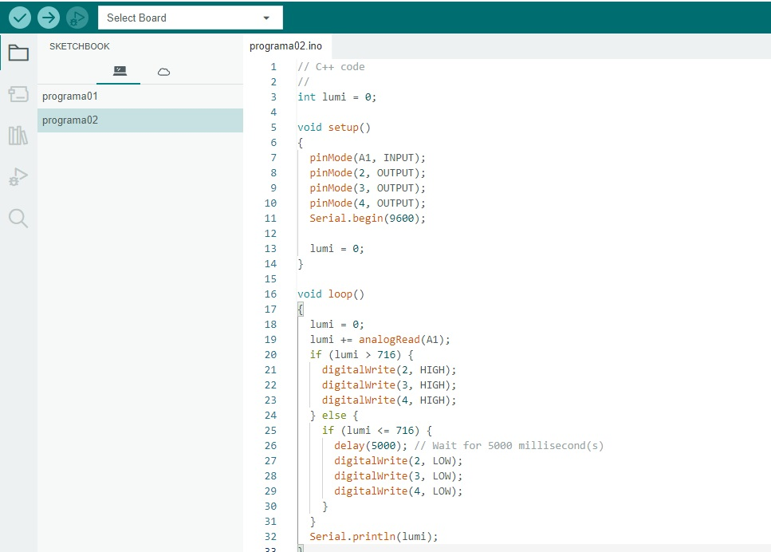

<!DOCTYPE html>
<html lang="pt-BR">
<head>
    <meta charset="UTF-8">
    <meta name="viewport" content="width=device-width, initial-scale=1.0">
    <title>Página de controle de Iluminação</title>
</head>
<body>
    <link rel="stylesheet" href="style.css">
</body>
</html>
<nav>
    <a href="./index.html">Pagina principal</a>
    <a href="./controleiluminação.html">Página de controle de Iluminação</a>
    <a href="./curiosidade.html">Página de Curiosidades sobre o LDR</a>
</nav>
<h2>foto do LDR com a montágem física no ARDUÍNO (prática)</h2>
<div>
    
</div>
<br>
<h2> print de tela de um exemplo de código C++ no IDE ARDUÌNO</h2>
<div>
    
</div>
<br>
<h2>Filmagem do controle de iluminação funcionando</h2>
<br>
<br>
<br>
<br>
<br>
<h2> foto das medidas realizadas com o multímetro e a explicação com as próprias palavras</h2>
<div>
    
</div>
<p>utlisamos um multimetro para medir a voltagem do LDR enquanto o sistema funcionava.</p>
<div class="video2"><iframe width="560" height="315" src="https://www.youtube.com/embed/6FuWbe5DfVg?si=N4vhh4nLceao1bwu" title="YouTube video player" frameborder="0" allow="accelerometer; autoplay; clipboard-write; encrypted-media; gyroscope; picture-in-picture; web-share" referrerpolicy="strict-origin-when-cross-origin" allowfullscreen></iframe></div>
<br>
<h2>Print de tela da ligação do LDR e LEDs no Tinkercad</h2>
<div>
    
</div>
